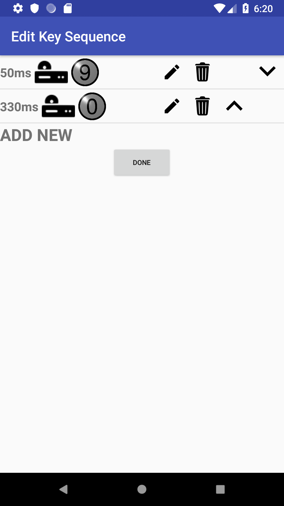
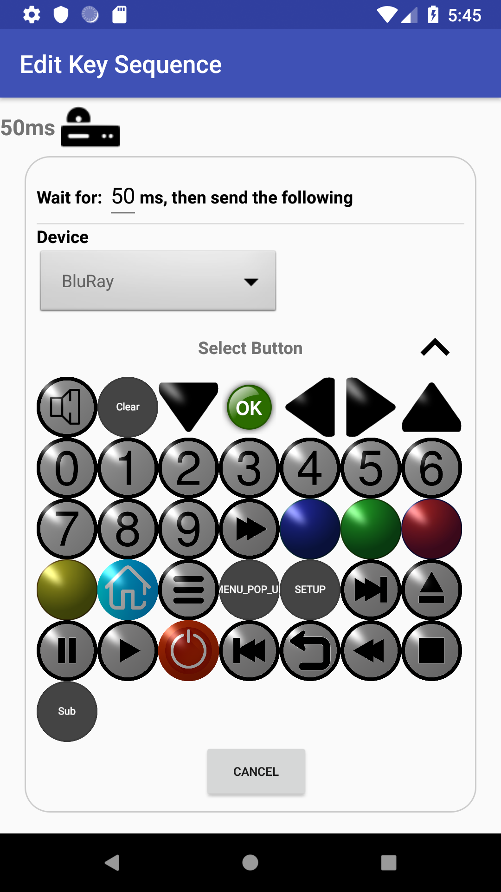

A Key Sequence is a pre-set series of codes (Key Steps) that are transmitted to one or more devices either when an Activity Starts or when a Custom Key is pressed.
Each Key Step consists of a Wait Period, a Device and a Key to send. When Editing or Creating a Key Sequence you are presented with the view shown in the figure; each step (two in the example) is shown with the first Step at the top of the screen, then the second Step etc. From this view you can:
When 'Edit' or 'Add New' is selected, the view will expand to allow that Key Step to be edited/created as described below. You must complete editing or creating a Key Step before the Edit Key Sequence view can be closed.
With all Key Steps collapsed', click on the done button to complete the process.
Pushing the Back button at any time will cancel the operation.

When editing or creating a Key Step the view is expanded, similar to that shown in the figure. The very top of this view shows the current settings of the Key Step, these can be changed within the bordered area of the view.
To be valid, a Key Sequence must contain:
A 'Done' button will appear (within the border) when a valid Key Step exists. Click on this to collapse the step being edited.
Pushing the Cancel button at any time will cancel the editing of the current step. No changes will be saved.
